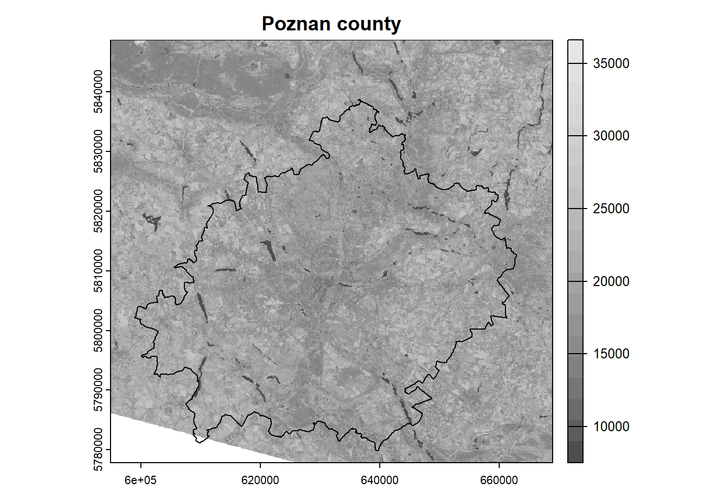
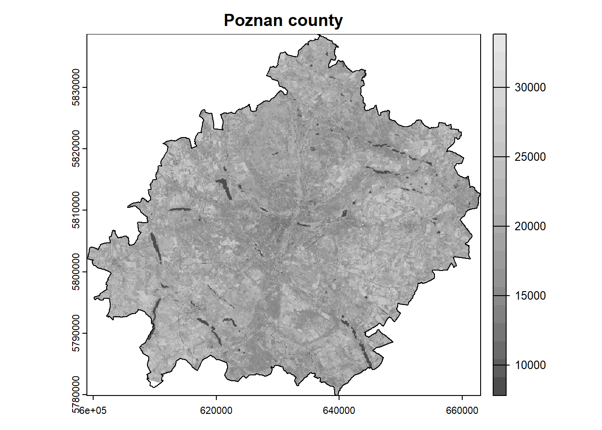
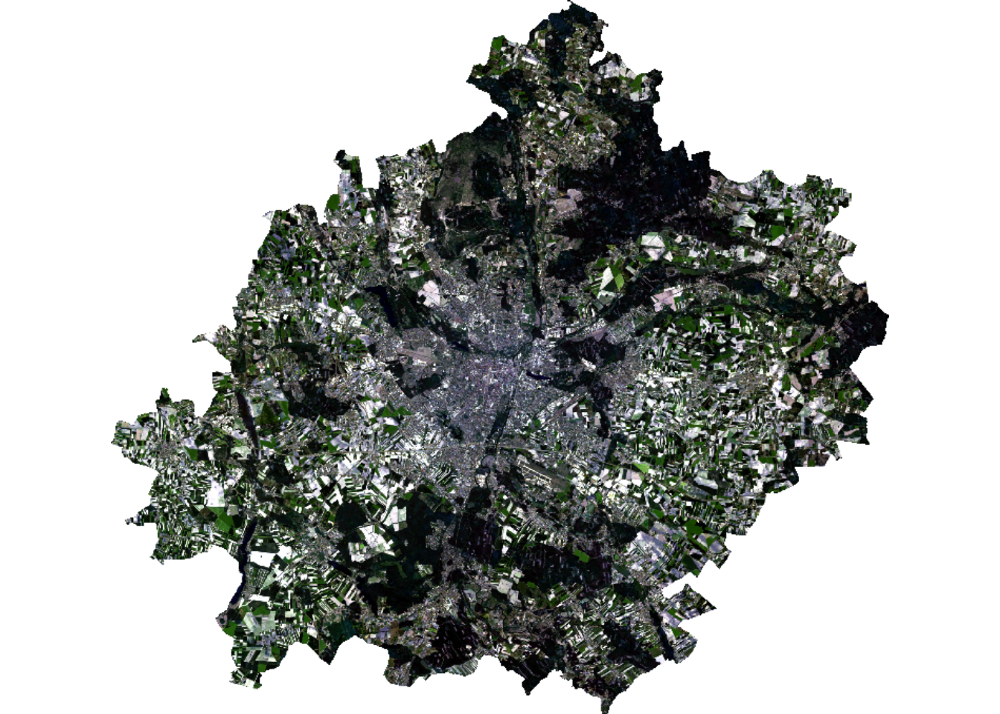
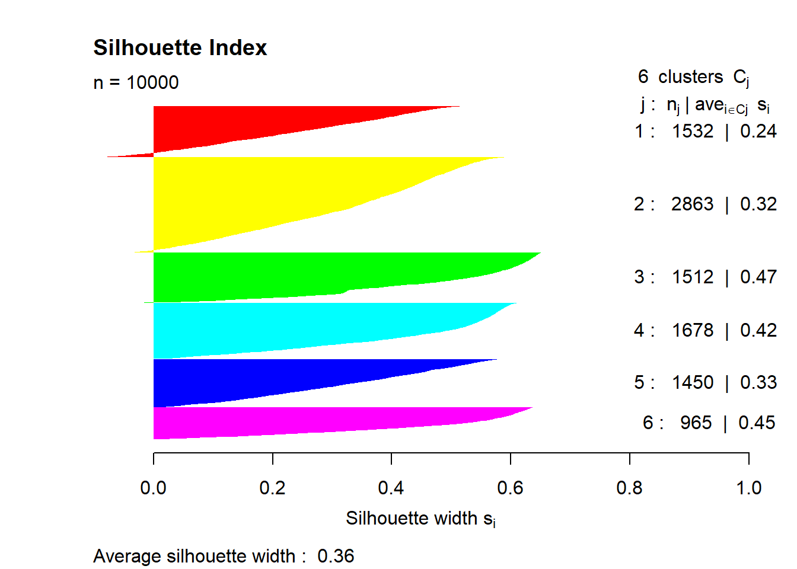
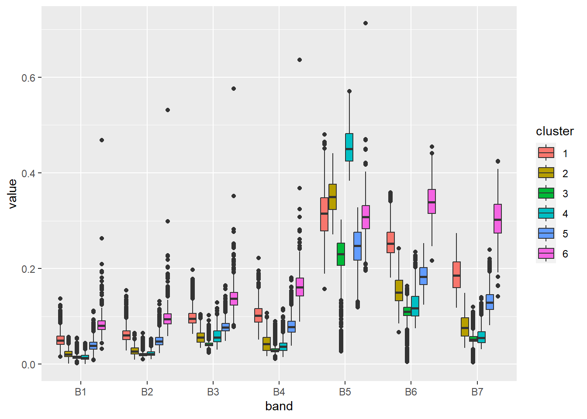
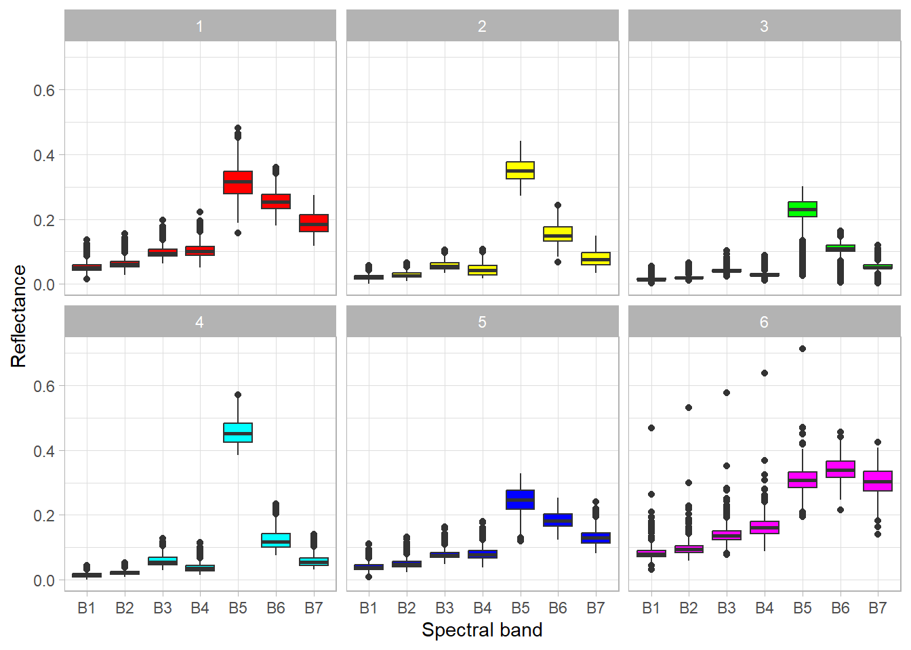
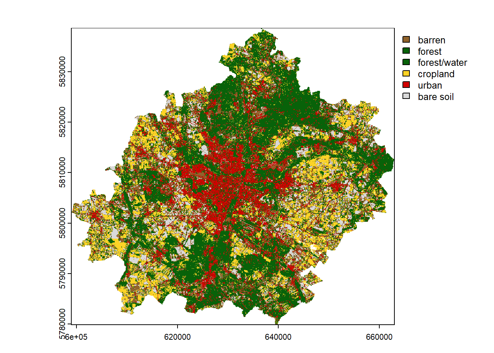

options(timeout = 600) # increase connection timeout
url = "https://zenodo.org/record/8164626/files/data.zip"
download.file(url, "data.zip")
unzip("data.zip")Unsupervised classification (clustering) of satellite images
Data acquisition
We can download the dataset from Zenodo using the download.file() function and then unpack the .zip archive using the unzip() function. If you downloaded the data manually before, you can skip this part.
Data loading
#install.packages(c("terra", "tidyr", "ggplot2"))# load the package
library("terra")In the first step, we need to create a list of files (rasters) that we are going to load. To do this, we can use the list.files() function, which takes a path to a folder with files as an argument. In addition, we must indicate what kind of files we want to load (pattern = "\\.TIF$") and return full paths to the files (full.names = TRUE). If you unpacked the data in a different location, then you must indicate the correct path.
# list files from a directory
files = list.files("clustering_data/data/data", pattern = "\\.TIF$", full.names = TRUE)
files[1] "clustering_data/data/data/LC08_L2SP_191023_20230605_20230613_02_T1_SR_B1.TIF"
[2] "clustering_data/data/data/LC08_L2SP_191023_20230605_20230613_02_T1_SR_B2.TIF"
[3] "clustering_data/data/data/LC08_L2SP_191023_20230605_20230613_02_T1_SR_B3.TIF"
[4] "clustering_data/data/data/LC08_L2SP_191023_20230605_20230613_02_T1_SR_B4.TIF"
[5] "clustering_data/data/data/LC08_L2SP_191023_20230605_20230613_02_T1_SR_B5.TIF"
[6] "clustering_data/data/data/LC08_L2SP_191023_20230605_20230613_02_T1_SR_B6.TIF"
[7] "clustering_data/data/data/LC08_L2SP_191023_20230605_20230613_02_T1_SR_B7.TIF"Once we have created a list of files, we can load them using the rast() function from the terra package and then display the metadata.
# load raster data
landsat = rast(files)
landsat # calling the object displays the metadataclass : SpatRaster
dimensions : 2360, 2469, 7 (nrow, ncol, nlyr)
resolution : 30, 30 (x, y)
extent : 594915, 668985, 5777865, 5848665 (xmin, xmax, ymin, ymax)
coord. ref. : WGS 84 / UTM zone 33N (EPSG:32633)
sources : LC08_L2SP_191023_20230605_20230613_02_T1_SR_B1.TIF
LC08_L2SP_191023_20230605_20230613_02_T1_SR_B2.TIF
LC08_L2SP_191023_20230605_20230613_02_T1_SR_B3.TIF
... and 4 more source(s)
names : LC08_~SR_B1, LC08_~SR_B2, LC08_~SR_B3, LC08_~SR_B4, LC08_~SR_B5, LC08_~SR_B6, ...
min values : 31, 28, 2739, 2745, 7413, 6857, ...
max values : 36332, 34628, 36618, 32237, 50996, 61014, ... We can also shorten or rename the spectral bands. Before this, make sure that the bands are loaded in the correct order.
names(landsat) # original names[1] "LC08_L2SP_191023_20230605_20230613_02_T1_SR_B1"
[2] "LC08_L2SP_191023_20230605_20230613_02_T1_SR_B2"
[3] "LC08_L2SP_191023_20230605_20230613_02_T1_SR_B3"
[4] "LC08_L2SP_191023_20230605_20230613_02_T1_SR_B4"
[5] "LC08_L2SP_191023_20230605_20230613_02_T1_SR_B5"
[6] "LC08_L2SP_191023_20230605_20230613_02_T1_SR_B6"
[7] "LC08_L2SP_191023_20230605_20230613_02_T1_SR_B7"names(landsat) = paste0("B", 1:7) # shorten the names
names(landsat) # new names[1] "B1" "B2" "B3" "B4" "B5" "B6" "B7"# or alternatively rename
# names(landsat) = c("Ultra Blue", "Blue", "Green", "Red", "NIR", "SWIR1", "SWIR2")Loading vector data is done in an analogous way using the vect() function.
# load vector data
poly = vect("clustering_data/data/data/Poznan.gpkg")
poly class : SpatVector
geometry : polygons
dimensions : 1, 0 (geometries, attributes)
extent : 326611.5, 391121.8, 477976.1, 536838.4 (xmin, xmax, ymin, ymax)
source : Poznan.gpkg
coord. ref. : ETRF2000-PL / CS92 (EPSG:2180) As we can see from the metadata, raster and vector data have different coordinate reference systems (CRS), which is troublesome. The easiest way is to transform the vector data into a raster’s CRS and we can do it with the project() function and specifying the EPSG code.
poly = project(poly, "EPSG:32633")
crs(poly, describe = TRUE)$code # check EPSG after transformation[1] "32633"Now we can prepare a simple visualization using the near infrared band (NIR; B5) and polygon as an example. You can either use index ([[5]]) or name ([["B5"]]) to select a band (raster layer).
colors = gray.colors(n = 20) # define the color scheme
plot(landsat[[5]], main = "Poznan county", col = colors) # plot NIR band
plot(poly, add = TRUE) # add polygon
Raster processing
The extent of our analysis area is limited to the Poznan county, while the satellite scene has a much larger extent. In such a situation, we can crop the rasters, so that their further processing will be faster and the results will take up less space on disk. The crop() function is used to crop the rasters, and we need to specify the raster and vector as arguments.
Note that the rasters are represented as matrices, so the cropping is done to the bounding box. To include only the area of our polygon in the analysis, we need to mask the pixels outside the boundary. This can be done by setting the mask = TRUE argument in the aforementioned function.
landsat = crop(landsat, poly, mask = TRUE)
plot(landsat[[5]], main = "Poznan county", col = colors)
plot(poly, add = TRUE)
In the next step, we can easily check the descriptive statistics of our dataset.
summary(landsat) B1 B2 B3 B4
Min. : 4095 Min. : 1959 Min. : 8075 Min. : 7655
1st Qu.: 7813 1st Qu.: 8037 1st Qu.: 8987 1st Qu.: 8408
Median : 8176 Median : 8429 Median : 9659 Median : 9170
Mean : 8464 Mean : 8771 Mean : 9901 Mean : 9706
3rd Qu.: 8879 3rd Qu.: 9229 3rd Qu.:10408 3rd Qu.:10499
Max. :23937 Max. :25640 Max. :28745 Max. :30744
NA's :42589 NA's :42588 NA's :42588 NA's :42588
B5 B6 B7
Min. : 7413 Min. : 7447 Min. : 7406
1st Qu.:16791 1st Qu.:11743 1st Qu.: 9318
Median :18907 Median :13078 Median :10541
Mean :18980 Mean :13783 Mean :11553
3rd Qu.:21018 3rd Qu.:15265 3rd Qu.:12847
Max. :33376 Max. :34485 Max. :37960
NA's :42588 NA's :42588 NA's :42588 As we can see, the spectral reflectance values are several thousand for each band and are encoded as integers. The spectral reflectance should be in the range from 0 to 1. Therefore, we need to scale our data using the following equation (this only applies to reflectance, not temperature!):
\[x = x \cdot 0.0000275 - 0.2\]
For example, the pixel value in the near infrared (NIR) band is 15000. Using the above formula, we need to multiply this value by 0.0000275 (scale factor) and then subtract 0.2 (offset). As a result, we will get a reflection equal to 0.2125. Note that each product/collection has a different formula and it is necessary to consult the documentation.
We don’t need to apply this formula separately for each band in the loop because the arithmetic operations in the terra package are applied to all bands by default.
landsat = landsat * 2.75e-05 - 0.2
summary(landsat) B1 B2 B3 B4
Min. :-0.09 Min. :-0.15 Min. :0.02 Min. :0.01
1st Qu.: 0.01 1st Qu.: 0.02 1st Qu.:0.05 1st Qu.:0.03
Median : 0.02 Median : 0.03 Median :0.07 Median :0.05
Mean : 0.03 Mean : 0.04 Mean :0.07 Mean :0.07
3rd Qu.: 0.04 3rd Qu.: 0.05 3rd Qu.:0.09 3rd Qu.:0.09
Max. : 0.46 Max. : 0.51 Max. :0.59 Max. :0.65
NA's :42589 NA's :42588 NA's :42588 NA's :42588
B5 B6 B7
Min. :0.00 Min. :0.00 Min. :0.00
1st Qu.:0.26 1st Qu.:0.12 1st Qu.:0.06
Median :0.32 Median :0.16 Median :0.09
Mean :0.32 Mean :0.18 Mean :0.12
3rd Qu.:0.38 3rd Qu.:0.22 3rd Qu.:0.15
Max. :0.72 Max. :0.75 Max. :0.84
NA's :42588 NA's :42588 NA's :42588 We can still see that some values exceed the range of 0 to 1. These are outliers that are usually associated with incorrect measurement or oversaturation. We can solve this problem in two ways:
- Replace these values with missing data (NA).
- Trim to minimum and maximum value.
The first way can cause us to lose a large part of the dataset. The second way, on the other hand, can cause skewed results.
# method 1
landsat[landsat < 0] = NA
landsat[landsat > 1] = NA# method 2
landsat[landsat < 0] = 0
landsat[landsat > 1] = 1After scaling the values, we can display the RGB composition. In this case, instead of plot() function, use plotRGB() function and define the order of red, green and blue bands. In addition, we need to specify the maximum reflection value for the bands (in our case scale = 1). It often happens that compositions are too dark/bright, then it is helpful to apply color stretching using the stretch = "lin" or stretch = "hist" argument.
# plotRGB(landsat, r = 4, g = 3, b = 2, scale = 1)
plotRGB(landsat, r = 4, g = 3, b = 2, scale = 1, stretch = "lin")
Clustering
# load clustering package
library("cluster")Data for modeling must be prepared in an appropriate way. Classification models most often require a matrix or data frame at the training stage. Raster data can be transformed into a matrix using the values() function.
mat = values(landsat)
nrow(mat) # print number of rows/pixels[1] 4182465Using the interactive View() function, we can see what our matrix looks like.
View(mat)As we can see, a lot of its values are marked as missing data (mostly they are outside the analysis area). Usually models do not support NA, so we need to remove them. A dedicated function na.omit() can be used for this.
mat_omit = na.omit(mat)
nrow(mat_omit)[1] 2402430Now we will move on to the next stage of the analysis, which is to train the model. There are many clustering methods and models (see CRAN Task View), but in this example we will use the simplest k-means clustering method. This model only requires the number of groups/clusters (centers argument) to be given in advance. This is a stochastic algorithm, so it returns different results each time. To make the analysis repeatable we need to set the seed of randomness – set.seed().
set.seed(1)
mdl = kmeans(mat_omit, centers = 6)As a result of the above operation, we received, among others:
- Calculated group averages for each band
(mdl$centers). - Vector with classified matrix (pixels) values
(mdl$cluster).
Let’s display these objects:
mdl$centers B1 B2 B3 B4 B5 B6 B7
1 0.05103899 0.06176081 0.09707305 0.10302303 0.3134292 0.2538940 0.18729837
2 0.02161415 0.02811265 0.05688793 0.04397068 0.3501170 0.1548471 0.07983935
3 0.01568182 0.02102859 0.04266913 0.03074910 0.2153262 0.1025743 0.05127214
4 0.01476647 0.02272622 0.05795271 0.03789260 0.4545335 0.1238540 0.05838875
5 0.04022702 0.05004405 0.07896698 0.08065334 0.2440231 0.1842851 0.13326570
6 0.08394913 0.09824070 0.14036534 0.16473647 0.3085605 0.3406860 0.30397409head(mdl$cluster) # display the first 6 elements[1] 2 2 2 2 2 4This means that the first row (representing a single pixel) belongs to group 2, the second to group 2, the third to group 2, and so on.
Validation
An inseparable element of modeling is the validation of the created models. The challenge is to choose the right grouping method for a specific dataset and determine the appropriate number of groups. Note that increasing the number of clusters increases the similarity between objects in a cluster, but with more clusters, their interpretation becomes more difficult.
The most common way to validate clustering results is to use internal metrics, such as Dunn index, Davies–Bouldin index or silhouette index. In this example, we will use the latter.
Silhouette index evaluates the compactness and separation of the clusters based on the distances between objects within the same cluster and between objects in different clusters. The values of this index range from -1 to 1. A value close to 1 indicates that the object is well clustered and is far away from neighboring clusters. A value close to -1 suggests that the object may have been assigned to the wrong cluster. A value near 0 indicates that the object is very close to the boundary between different clusters. Thus, in general, a higher value of this index indicates better clustering results. See the cluster::silhouette() documentation for more details.
Now let’s try to calculate this index. Basically, using this index requires calculating the similarity of each object with every object, which in our case is an impossible task (our dataset consists of 2.5 million objects). To do this, we need to draw a smaller sample (let’s say \(n = 10 000\)). In the function, we need to specify two objects – a vector with clusters and a dissimilarity matrix, which can be calculated in advance using the dist() function.
set.seed(1)
# draw sample indexes
idx = sample(1:nrow(mat_omit), size = 10000)
head(idx)[1] 2221565 1485099 856018 2122325 1343338 640775# calculate silhouette index
sil = silhouette(mdl$cluster[idx], dist(mat_omit[idx, ]))
summary(sil)Silhouette of 10000 units in 6 clusters from silhouette.default(x = mdl$cluster[idx], dist = dist(mat_omit[idx, ])) :
Cluster sizes and average silhouette widths:
1532 2863 1512 1678 1450 965
0.2361307 0.3171400 0.4657474 0.4235420 0.3291018 0.4483677
Individual silhouette widths:
Min. 1st Qu. Median Mean 3rd Qu. Max.
-0.1014 0.2139 0.3828 0.3595 0.5183 0.6519 The average cluster convergence is 0.36. This is not the best result. We should try to increase the number of clusters or use another clustering method. We can also check the results on the chart.
colors = rainbow(n = 6)
plot(sil, border = NA, col = colors, main = "Silhouette Index")
Interpretation
The essence of grouping is to create a group of similar objects, but our task is to interpret what the created groups represent and name them. Interpretation is a difficult task, and often the results are unclear. For this purpose, it is necessary to analyze the descriptive statistics of groups and to use various plots and map compositions. Knowledge of the spectral properties of objects is also very useful.
So let’s try to interpret the obtained clusters by assisting with a boxplot. The ggplot2 package works best for creating visualizations. Here you can find a free manual and ready-made recipes.
ggplot2 requires preparing the dataset to the appropriate form. The data must be presented as a data frame in the so-called long form (multiple rows), while base functions for visualization require wide form (multiple columns). This change can be made easily using the tidyr package.
# install.packages(c("tidyr", "ggplot2"))
library("tidyr") # data transformationWarning: package 'tidyr' was built under R version 4.3.2library("ggplot2") # data visualizationWarning: package 'ggplot2' was built under R version 4.3.2As we noted earlier, our dataset is quite large and there is no need to present all the data. We can do it more efficiently by using a previously drawn sample. Now we need to combine the drawn rows from the matrix with the corresponding clusters (cbind()). Then we will convert the matrix into a data frame (as.data.frame()).
stats = cbind(mat_omit[idx, ], cluster = mdl$cluster[idx])
stats = as.data.frame(stats)
head(stats) B1 B2 B3 B4 B5 B6 B7 cluster
1 0.0499475 0.0673825 0.1141875 0.1329425 0.3903975 0.3669400 0.2197325 6
2 0.0282500 0.0369400 0.0651000 0.0564925 0.3507150 0.1613225 0.1018675 2
3 0.0117225 0.0179925 0.0372975 0.0255275 0.2450600 0.1129225 0.0512950 3
4 0.0235475 0.0349050 0.0828375 0.0643300 0.4111325 0.1421000 0.0912250 4
5 0.0780800 0.0862475 0.1151500 0.1311000 0.2536125 0.3102075 0.2714600 6
6 0.0753300 0.0904000 0.1325025 0.1606350 0.3108950 0.3309700 0.3002250 6The displayed data is in a wide form (each spectral band is stored in a separate column). Now we need to change the form, in which we get two columns – the band and the value. To do this, we will use the pivot_longer() function.
stats = pivot_longer(stats, cols = 1:7, names_to = "band", values_to = "value")
# change the data type to factor
stats$cluster = as.factor(stats$cluster)
stats$band = as.factor(stats$band)
head(stats)# A tibble: 6 × 3
cluster band value
<fct> <fct> <dbl>
1 6 B1 0.0499
2 6 B2 0.0674
3 6 B3 0.114
4 6 B4 0.133
5 6 B5 0.390
6 6 B6 0.367 The data structure is already prepared. Now let’s create a simple boxplot.
ggplot(stats, aes(x = band, y = value, fill = cluster)) +
geom_boxplot()
By changing a few default parameters, we can improve the perception of this figure.
ggplot(stats, aes(x = band, y = value, fill = cluster)) +
geom_boxplot(show.legend = FALSE) +
scale_fill_manual(values = colors) +
facet_wrap(vars(cluster)) +
xlab("Spectral band") +
ylab("Reflectance") +
theme_light()
Based on the above graph, we can analyze the spectral properties of the clusters, and therefore interpret what objects they represent. Simplified conclusions may be as follows:
- Cluster 1 – the significant difference between the NIR and RED bands indicates the presence of vegetation, in addition, we can see a high reflection in the SWIR bands, which relates to soils. Thus, we can conclude that this cluster represents barren areas with little vegetation.
- Cluster 2 – the large difference between the NIR and RED bands, indicates a high level of biomass. Clusters 2 and 4 have similar distributions, but in cluster 2 there is less difference between the mentioned bands. The data is from the beginning of June, so we can assume that crops have almost reached the maximum level of biomass (in this climate zone), which should be higher than that of forests. Therefore, this cluster represents a forest.
- Cluster 3 – this cluster looks similar to cluster 2 except that there are outliers close to 0 in all bands. These values represent water objects that absorb radiation. Of course, this is not a correct classification – water objects and forests should be assigned to separate clusters.
- Cluster 4 – cropland (see description of cluster 2).
- Cluster 5 – low reflectance in the visible bands and higher reflectance in the NIR and SWIR bands may indicate buildings (urban area), generally artificial objects.
- Cluster 6 – relatively high reflection in all bands (including NIR and SWIR) indicates a bright object. In this case, they are bare soils without vegetation cover, which are usually light brown or grey.
Final map
The last step is to prepare a classification (so-called land cover) map. First, we need to prepare an empty vector with the length of the number of raster pixels. This can be checked using the ncell() function. In our case it is 4,182,465. Next, we need to assign our clusters in the vector to the appropriate places, i.e. those that are not masked (NA). The unmasked values can be referenced by the complete.cases() function. In the last step, copy the metadata of the landsat object, but only with one layer, and assign it the values of the vec vector.
vec = rep(NA, ncell(landsat)) # prepare an empty vector
vec[complete.cases(mat)] = mdl$cluster # assign clusters to vector if not NA
clustering = rast(landsat, nlyrs = 1, vals = vec) # create rasterNow let’s represent the result of clustering on the map using the appropriate colors and names of the clusters.
colors = c("#91632b", "#086209", "#086209", "#fdd327", "#d20000", "#d9d9d9")
category = c("barren", "forest", "forest/water", "cropland", "urban", "bare soil")
plot(clustering, col = colors, type = "classes", levels = category)
If the result is satisfactory, we can save it using the writeRaster() function. Such a file can be later loaded in R or another program that supports spatial data (e.g. QGIS). In addition, for categorical data, it is useful to set the datatype as Byte / INT1U when saving.
writeRaster(clustering, "clustering2.tif", datatype = "INT1U")Summary
This workshop is only an outline of the use of unsupervised classification for satellite imagery. The content can be expanded to include more topics on:
- automatic search and download of satellite data
- multi-temporal analysis
- cloud data processing
- integration of various sensors (e.g. Sentinel 2) and data (e.g. DEM)
- spatial validation
- selection of explanatory variables and dimensionality reduction
To reference to the above, the following issues can also be addressed:
- Post-processing of results – the used clustering method is pixel-based, which means that neighboring pixels are not considered in the classification. This causes the pepper and salt effect. This can be slightly improved by using a modal filter (
terra::focal()) or sieve filter (terra::sieve()). Another approach is to use explanatory variables that are calculated in a moving window or at smaller spatial scales. - Separate forests from water objects – in our clustering, forests and water objects were incorrectly classified into one cluster. As a solution, a water spatial index can be calculated to detect water (check Table 2 from this publication). Moreover, other types of spectral indexes, and the thermal and panchromatic bands (at a higher resolution of 15m) can be included in this analysis.
- Prediction in larger or new areas – our analysis covered a small area, so we could load all the data into memory. However, usually the model is trained on a sample and then applied to the whole area. Unfortunately, the
kmeans()function does not have apredictmethod, so we have to write it ourselves. It is not complicated; it just requires calculating the pixel distance for each cluster and selecting the closest one. The second thing, in order to speed up the prediction, it would be worth parallelizing this process. A final note, keep in mind that the developed model may work incorrectly in other locations. - Comparison of results with supervised classification – there are many land cover maps (see CORINE Land Cover, ESA WorldCover, ESRI Land Cover). It would be nice to compare the two approaches.
If you are interested in this topic, you can find more information in the following free books:
- Spatial Data Science with R and “terra”
- Geocomputation with R
- Spatial Data Science: With Applications in R
It is also worth checking out other packages for spatial data analysis and machine learning (mlr3 and tidymodels frameworks in particular).
If you have any problem, it is best to look for help on StackOverflow or RStudio Community. Often interesting discussions appear on Twitter / Mastodon (#rspatial) and GitHub (https://github.com/rspatial; https://github.com/r-spatial).